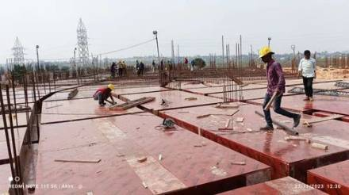
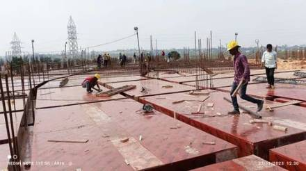

Overview
Shuttering and barbending are critical components of reinforced concrete (RCC) work. At Syed Constructions, we ensure high-precision shuttering and steel bar fabrication to create strong structural elements like beams, columns, slabs, and footings. Our experienced team ensures dimensional accuracy and compliance with structural design.
Scope of Work
1. Shuttering/Formwork
We use adjustable MS shuttering, plywood form panels, and centering props for formwork setup. Supports are securely tied and leveled for safe concrete casting. We apply shutter oil to prevent sticking and ensure a smooth finish.
2. Barbending
Reinforcement bars (TMT rods) are cut, bent, and tied as per bar bending schedules (BBS). We follow specified diameters, hooks, lap lengths, and clear covers per IS codes. Binding is done using annealed wire with proper spacing and overlap.
3. Formwork for RCC Elements
Our team installs formwork for:
- Footings (Isolated, Combined)
- Columns and Pedestals
- Beams and Slabs
- Staircases and Retaining Walls
4. Steel Reinforcement Detailing
We verify bar layouts with structural drawings before fixing. Chairs, cover blocks, and spacers are placed to maintain position and strength. Bars are tied using standard binding methods with site-engineer supervision.
5. Safety and Inspection
All shuttering and bar bending works undergo inspection for alignment, cover, cleanliness, and stability. Adequate safety measures like scaffolding, PPE kits, and temporary guardrails are in place throughout the work duration.
Tools & Crew
We employ shuttering carpenters, barbenders, steel fixers, and helpers equipped with bending tools, tying wires, clamps, measuring tapes, and safety gear. Our works are supervised by experienced foremen and engineers.
Recent Projects
- Shuttering & Barbending – Govt. School Building – Madakasira (2023)
- RCC Column and Slab Forming – Marriage Hall – Penukonda (2022)
- Industrial Shed RCC Base – Hindupur Town (2021)
Gallery

 
